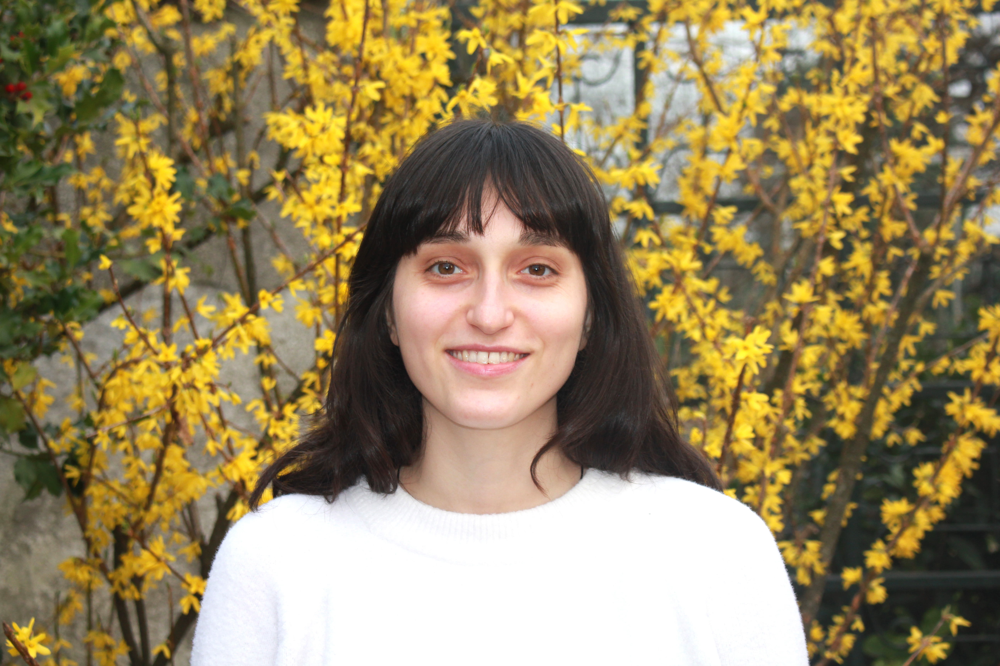

Veronica Piuri
I'm
About
Environmental Engineer with a strong background in environmental planning, monitoring, and data-driven analysis. I have experience in academic research on climate adaptation, water management, and AI-based environmental modeling, and I currently work as a consultant in air quality, supporting monitoring and assessment activities.

Environmental Engineer
My path started in Environmental Engineering, where I developed expertise in designing and managing complex systems. I later specialised in Environmental land planning and monitoring, with a focus on natural resource modeling, water management, and climate adaptation. For three years, I worked as a researcher at Politecnico di Milano, concentrating on the water-energy-food nexus, model integration, and the application of AI/ML techniques for environmental modeling. Currently, I serve as an Air Quality Modeller at SUEZ/Arianet, where I lead local studies addressing industrial and traffic emissions. I am especially passionate about projects where Data and Policy Making intersect – driving solutions that foster a more equitable future for both people and the environment.
- City: Milan, Italy
- Degree: MSc in Environmental Engineering
- Email: veronica.piuri@gmail.com
Skills
Climate & Environmental Modelling
- Hydrological modelling
- Climate projections (GCM / RCM)
- Bias correction & downscaling (LOCI, EQM)
- Air Quality Monitoring
- Streamflow simulation
- Climate risk assessment
Water–Energy–Food Systems
- Integrated WEF modelling
- Dam operation optimization
- Water allocation modelling
- Agricultural water demand modelling
- Aquaponics & hydroponics systems
- Desalination integration modelling
Data Analysis & Programming
- Python
- MATLAB
- R
- Large environmental datasets
- Time-series analysis
- Data visualization
- Unix & scientific workflows
Machine Learning & AI for Environment
- Artificial Neural Networks (ANN)
- LSTM for hydrological modelling
- Environmental process modelling
- Model calibration & validation
- Optimization algorithms
- Uncertainty analysis
GIS & Remote Sensing
- QGIS
- Spatial data processing
- Satellite data analysis
- Radar & spectral data basics
- Geospatial datasets integration
Research & Project Management
- EU-funded projects
- Interdisciplinary collaboration
- Scientific writing
- Conference presentations (EGU)
- Policy-oriented reporting
- Stakeholder engagement
Soft Skills
Languages
Professional Experience
ARIANET, Milan, Italy
Nov 2025 – Present
Air Quality Modeler
- Conduct atmospheric impact assessments related to transport and industrial sectors, supporting environmental compliance and sustainability strategies.
- Apply air quality modelling tools to simulate pollutant dispersion and evaluate mitigation scenarios.
- Process and analyse environmental datasets using programming tools to ensure robust and reproducible results.
- Contribute to technical reports and studies supporting regulatory and policy decisions.
SoftWater
Jul 2024 – Nov 2025
Data Scientist
- Contributed to EU-funded and consultancy projects focused on climate change adaptation and water resource management.
- Generated and processed climate projections (GCM/RCM) for impact assessments on hydrological and agricultural systems.
- Applied bias correction and downscaling techniques to improve the reliability of precipitation and temperature scenarios.
- Supported hydrological modelling and climate risk analysis for decision-support tools.
Politecnico di Milano, Milan, Italy
Jul 2022 – Nov 2025
Scientific Researcher & Project Manager
- Developed a multi-objective optimization model to evaluate innovative water management measures in arid and transboundary river basins.
- Generated future climate and hydrological scenarios to support robust decision-making under climate and global change.
- Performed uncertainty analysis to assess the robustness of adaptation strategies.
- Managed and coordinated EU-funded projects (AWESOME, CLINT), overseeing reporting, stakeholder engagement and interdisciplinary collaboration.
Nordic BioVentures, Copenhagen Metropolitan Area
Jan 2024 – Jun 2024
Junior Fellow – Tech Scouting
- Conducted market and technology scouting focused on biosolutions and climate-tech ventures across Europe.
- Analysed investment trends, venture deals and exit strategies within the last decade.
- Supported venture creation and incubation activities, contributing to early-stage startup evaluation and funding readiness.
Education
Politecnico di Milano, Milan, Italy
Sep 2019 – Apr 2022
Master of Engineering (MEng), Environmental Engineering
Specialized in water resources management, climate change impact assessment and environmental systems modelling. Thesis focused on the integration of aquaponics and desalination systems within large-scale water allocation models to improve water–energy–food nexus resilience under climate change.
Universidade de Coimbra, Coimbra, Portugal
Feb 2020 – Jul 2020
International Study Experience (Erasmus+)
Exchange semester focused on environmental modelling, sustainable resource management and international collaboration, strengthening interdisciplinary and cross-cultural teamwork skills.
Politecnico di Milano, Milan, Italy
Sep 2016 – Sep 2019
Bachelor of Engineering (BE), Environmental Engineering
Built a strong foundation in environmental chemistry, hydraulics, hydrology, circular economy and sustainable infrastructure, with emphasis on quantitative analysis and environmental impact assessment.
Projects & Certificates
Discover a collection of my standout projects and certifications.
- Projects
- Certificates
AWESOME - mAnaging Water, Ecosystems and food across sectors and Scales in the sOuth Mediterranean
EU founded project in which I contributed as researcher and project manager. I developed an optimization model to assess the introduction of desalination and aquaponics technologies in the Nile River Valley.
2020 – 2024
WebsiteEvolutionary optimization algorithm Application
Application of the Borg MOEA algorithm to a water management problem. This application is designed to optimase an optimal water reduction to apply in the Egyptian water scheme. Developed in the AWESOME project.
2022
GitHub repoCLINT - CLIMATE INTELLIGENCE
EU founded project in which I contributed as researcher and project manager.
2021 – 2025
WebsiteSAHARA - storage enhanced drought management for resilient river basins
PNR founded project in which I contributed as researcher developing local bias adjusted downscaled climate projections.
2025
WebsiteiMERMAID - Safeguarding the Mediterranean Sea from contaminants of emerging concerns (CoEC)
EU founded project in which I contributed as researcher developing local bias adjusted downscaled climate projections.
2022 - 2026
WebsiteMAURICE - Management of urban water resources in Central Europe facing climate change
EU founded project in which I contributed as researcher developing local bias adjusted downscaled climate projections.
2023 - 2026
WebsiteCisco CCNA Routing & Switching
Issuer: Cisco
Credential ID: 43071791
ICT Technician International
Issuer: Vocational High School of IT, Warsaw – International Programme
Credential ID: D/70006786/18
IELTS English (C1)
Issuer: IELTS / British Council
Score: 7.5 Credential ID: 22PL006473KOPR002A
Contact
If you'd like to get in touch, please feel free to reach out for collaboration, inquiries, or networking opportunities. I'm always open to new connections and discussions!